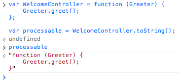

Inversion of control and more specifically dependency injection have been growing in popularity in the JavaScript landscape thanks to projects like Require.js and AngularJS. This article is a brief introduction to dependency injection and how it fits into JavaScript. It will also demystify the elegant way AngularJS implements dependency injection.
Dependency injection facilitates better testing by allowing us to mock dependencies in testing environments so that we only test one thing at a time. It also enables us to write more maintainable code by decoupling our objects from their implementations.
With dependency injection, your dependencies are given to your object instead of your object creating or explicitly referencing them. This means the dependency injector can provide a different dependency based on the context of the situation. For example, in your tests it might pass a fake version of your services API that doesn't make requests but returns static objects instead, while in production it provides the actual services API.
Another example could be to pass ZeptoJS to your view objects when the device is running Webkit instead of jQuery to improve performance.
The main benefits experienced by adopting dependency injection are as follows:
Holding dependencies to an API based contract becomes a natural process. Coding to interfaces is nothing new, the server side world has been battle testing this idea for a long time to the extent that the languages themselves implement the concept of interfaces. In JavaScript we have to force ourselves to do this. Fortunately dependency injection and module systems are a welcome friend.
Now that you have some idea of what dependency injection is, lets take a look at how to build a simple implementation of a dependency injector using AngularJS style dependency injection as a reference implementation. This implementation is purely for didactic purposes.
AngularJS is one of the only front end JavaScript frameworks that fully adopts dependency injection right down to the core of the framework. To a lot of developers the way dependency injection is implemented in AngularJS looks completely magic.
When creating controllers in AngularJS, the arguments are dependency names that will be injected into your controller. The argument names are the key here, they are leveraged to map a dependency name to an actual dependency. Yeah, the word "key" was used on purpose, you will see why.
/* Injected */
var WelcomeController = function (Greeter) {
/** I want a different Greeter injected dynamically. **/
Greeter.greet();
};
Lets explore some of the requirements to make this function work as expected.
The dependency container needs to know that this function wants to be processed. In the AngularJS world that is done through the Application object and the declarative HTML bindings. In our world we will explicitly ask our injector to process a function.
It needs to know what a Greeter before it can inject it.
To make our dependency injector aware of our WelcomeController we will simply tell our injector we want a function processed. Its important to know AngularJS ultimately does this same thing just using less obvious mechanisms whether that be the Application object or the HTML declarations.
var Injector = {
process: function(target) {
// Time to process
}
};
Injector.process(WelcomeController);
Ok, now that the Injector has the opportunity to process the WelcomeController we can figure out what dependencies the function wants, and execute it with the proper dependencies. This process is called dependency resolution. Before we can do that we need a way to register dependencies with our Injector object...
We need to be able to tell the dependency injector what a Greeter is before it can provide one. Any dependency injector worth it's bits will allow you to describe how it is provided. Whether that means being instantiated as a new object or returning a singleton. Most injection frameworks even have mechanisms to provide a constructor some configuration and register multiple dependencies by the same name. Since our dependency injector is just a simplified way to show how AngularJS does dependency mapping using parameter names, we won't worry about any of that.
Without further excuses, our simple register function:
Injector.dependencies = {};
Injector.register = function(name, dependency) {
this.dependencies[name] = dependency;
};
All we do is store our dependency by name so the injector knows what to provide when certain dependencies are requested. Lets go ahead and register an implementation of Greeter.
var RobotGreeter = {
greet: function() {
return 'Domo Arigato';
}
};
Injector.register('Greeter', RobotGreeter);
Now our injector knows what to provide when Greeter is specified as a dependency.
The building blocks are in place it's time for the sweet part of this article. The reason I wanted to post this article in the first place, the nutrients, the punch line, the hook, the call toString() with some sweet reflection. This is where the magic is, in JavaScript we don't have to execute a function immediately. The trick is to call toString on your function which returns the function as a string, this gives a chance to preprocess our functions as strings and turn them back into functions using the Function constructor, or just execute them with the proper parameters after doing some reflection. The latter is exactly what we will do here.
var WelcomeController = function (Greeter) {
Greeter.greet();
};
// Returns the function as a string.
var processable = WelcomeController.toString();
You can try it in your console!

Now that we have the WelcomeController as a string we can do some reflection to figure out which dependencies to inject.
It's time to implement the process method of our Injector. First lets take a look at injector.js from Angular. You'll notice the reflection starts on line 54 and leverages a few regular expressions to parse the function. Let's take a look at the regular expression, shall we?
var FN_ARGS = /^function\s*[^\(]*\(\s*([^\)]*)\)/m;
The FN_ARGS regular expression is used to select everything inside the parentheses of a function defintion. In other words the parameters of a function. In our case, the dependency list.
var args = WelcomeController.toString().match(FN_ARGS)[1];
console.log(args); // Returns Greeter
Pretty neat, right? We have now parsed out the WelcomeController's dependency list in our Injector prior to executing the WelcomeController function! Suppose the WelcomeController had multiple dependencies, this isn't terribly problematic since we can just split the arguments with a comma!
var MultipleDependenciesController = function(Greeter, OtherDependency) {
// Implementation of MultipleDependenciesController
};
var args = MultipleDependenciesController
.toString()
.match(FN_ARGS)[1]
.split(',');
console.log(args); // Returns ['Greeter', 'OtherDependency']
The rest is pretty straight forward, we just grab the requested dependency by name from our dependencies cache and call the target function passing the requested dependencies as arguments. Lets implement the function that maps our array of dependency names to their dependencies:
Injector.getDependencies = function(arr) {
var self = this;
return arr.map(function(dependencyName) {
return self.dependencies[dependencyName];
});
};
The getDependencies method takes the array of dependency names and maps it to a corresponding array of actual dependencies. If this map function is foreign to you check out the Array.prototype.map documentation.
Now that we have implemented our dependency resolver we can head back over to our process method and execute the target function with it's proper dependencies.
target.apply(target, this.getDependencies(args));
Pretty awesome, right?
var Injector = {
dependencies: {},
process: function(target) {
var FN_ARGS = /^function\s*[^\(]*\(\s*([^\)]*)\)/m;
var text = target.toString();
var args = text.match(FN_ARGS)[1].split(',');
target.apply(target, this.getDependencies(args));
},
getDependencies: function(arr) {
var self = this;
return arr.map(function(value) {
return self.dependencies[value];
});
},
register: function(name, dependency) {
this.dependencies[name] = dependency;
}
};
You can see the functioning injector we created in this example on jsFiddle.
This contrived example is not something you would use in an actual codebase it was simply created to demonstrate the rich functionality JavaScript provides and to explain how AngularJS provides dependency injection. If this interests you I highly recommend reviewing their code further. It's important to note this approach is not novel. Other projects use toString to preprocess code, for example Require.js uses a similar approach to parse and transpile CommonJS style modules to AMD style modules.
I hope you found this article enlightening and continue to explore dependency injection and how it applies to the client side world.
I really think there is something special brewing here.